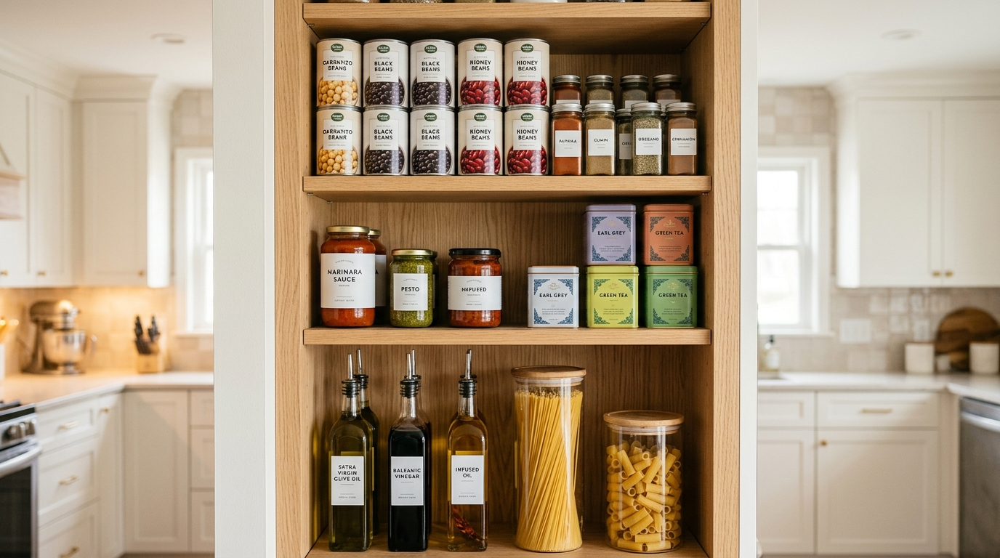

Open your pantry door and look past the front row of food. Everything may be neatly lined up, labeled, and grouped by category—yet you still feel like you are constantly running out of shelf space.
When you look closer, a subtle design mismatch often reveals itself: a row of 4-inch-tall canned tomatoes sitting on a 14-inch-tall shelf, leaving ten inches of empty, unused air space hovering above them. On another shelf, tall cereal boxes are squeezed in sideways because the vertical clearance is just a fraction of an inch too short.
A pantry can look completely tidy while quietly wasting a third of its usable capacity. Storage efficiency is not just about having nice containers; it is about matching available shelf height to the actual height of the items you store.
The goal of The Shelf-Height Rule is not to cram every cubic inch of your cabinet until it bursts. The goal is to eliminate unnecessary vertical dead zones so your pantry works naturally with the physical proportions of everyday groceries—giving you more usable capacity without requiring expensive renovations.
Why an Organized Pantry Can Still Waste Space
In standard kitchen design, pantry shelves are often installed with uniform, equidistant spacing (for example, every shelf spaced exactly 12 or 14 inches apart). While this creates symmetrical lines on an empty cabinet blueprint, real-world grocery packaging is anything but uniform.
- Volumetric Waste vs. Visual Neatness: You can line up five cans of soup in a flawless row, but if there is eight inches of dead air above them, that vertical shelf volume is essentially unusable for anything else.
- The "Sideways Box" Frustration: When a tall pasta canister or family-size cereal box doesn't fit upright, it gets tilted or crammed onto a deep bottom shelf, blocking other staples.
- Premature Organizer Buying: When shelves fill up quickly due to wasted vertical gaps, people assume they need more plastic bins or external carts, when the real issue is simple vertical spacing.
Some clearance above items is essential for finger grip and easy retrieval. However, when the empty clearance above an item is taller than the item itself, the shelving layout is working against you. To understand how shelf depth interacts with visibility, read our guide on pantry depth and visibility rules.
The Shelf-Height Rule Explained
The Shelf-Height Rule is an adaptable physical framework designed to match vertical pantry tiers directly to item dimensions:
TALL ITEMS → TALLER ZONE
MEDIUM ITEMS → MEDIUM ZONE
SHORT ITEMS → SHORT ZONE

Instead of forcing your groceries to adapt to arbitrary, identical shelf gaps, you group items by their vertical profile and allocate shelf heights accordingly:
- TALL ZONE: Tailored for items 10 inches and taller (cereal boxes, olive oil bottles, tall pasta dispensers, bulk flour canisters).
- MEDIUM ZONE: Tailored for items 6 to 9 inches tall (pasta sauce jars, honey containers, rolled oats canisters, snack boxes).
- SHORT ZONE: Tailored for items under 5 inches tall (canned beans, tuna cans, small spice jars, peanut butter, condensed milk).
"Storage efficiency is not about filling every inch to the brim. It is about eliminating large pockets of dead air so every item has a natural, comfortable home."
How to Audit Your Pantry Before Moving Anything
Before moving a single jar or buying storage accessories, perform this quick 5-minute visual audit:
- Scan for Dead Air Pockets: Open your pantry and look horizontally across each shelf. Where are the largest empty vertical gaps? (Usually above canned goods and small jars).
- Sort by Height Profile: Mentally categorize your most common groceries into Tall, Medium, and Short tiers.
- Check Shelf Adjustability: Look closely at your cabinet sidewalls. Are there pre-drilled pin holes that allow you to move the shelf support pegs up or down?
- Evaluate Vertical Balance: Determine if moving one shelf down 3 inches would create room for an entirely new compact shelf for canned goods.
- Preserve Retrieval Clearance: Ensure any planned adjustment leaves approximately 1.5 to 2.5 inches of clearance above the tallest item for easy grabbing without scraping knuckles.
For advice on structuring everyday staples versus backup supplies, explore our guide on how to organize a pantry by frequency of use.
How to Create Three Height Zones
When you have adjustable shelving, you can easily customize your vertical layout:
The 3 Height Tiers in Practice
1. The Tall Zone (Lower or Middle Priority):
• Ideal Clearance: 13–16 inches
• Best For: Gallon vinegar jugs, olive oil bottles, family cereal boxes, tall airtight spaghetti dispensers.
• Placement Tip: Place at waist or eye level for heavy bottles to prevent strain when lifting.
2. The Medium Zone (Eye or Shoulder Level):
• Ideal Clearance: 8–10 inches
• Best For: Marinara jars, salsa containers, medium dry-goods containers, tea boxes, rolled oats.
• Placement Tip: This is your most versatile everyday cooking zone.
3. The Short Zone (Upper or Compact Mid-Tier):
• Ideal Clearance: 5–7 inches
• Best For: Canned vegetables, tuna, short spreads, baking soda, small spice tins.
• Placement Tip: Because cans are stable and short, a narrow shelf gap prevents them from being buried while freeing up space elsewhere in the pantry.
What to Do If Your Pantry Shelves Are Fixed
Many apartment renters and older homes have fixed, unmovable wooden shelves. You can still apply the Shelf-Height Rule using smart spatial zoning:
- Group by Height Horizontally: Rather than spreading short and tall items randomly across all shelves, dedicate one specific shelf exclusively to short items, and another to tall items.
- Use Selective Tiered Risers: On a tall fixed shelf holding short canned goods, a 3-tier expandable step riser uses the upper vertical air space while keeping every back row visible.
- Utilize Under-Shelf Hanging Baskets: A slide-on wire under-shelf basket takes advantage of dead air space beneath a fixed shelf to store lightweight items like snack bars, bread, or tortillas without drilling into walls.
To see how to stage foods with upcoming expiration dates, check out our guide to pantry use-first zones.
What NOT to Do (Common Mistakes to Avoid)
When optimizing shelf heights, avoid these common organizational pitfalls:
- Eliminating All Clearance: Leaving zero room above a bottle forces you to drag it forward and scrape the shelf above. Always maintain a comfortable 1.5 to 2-inch buffer for your fingers.
- Over-Stacking Unstable Cans: Stacking loose cans three or four units high without a riser or shelf leads to dangerous pantry avalanches.
- Buying Containers Before Knowing Item Heights: Purchasing a uniform set of bins that don't fit your tall pasta or short spices creates new dead space inside the containers themselves.
- Prioritizing Perfect Uniformity Over Utility: A pantry where every shelf is spaced exactly 12 inches looks neat when empty, but is functionally inefficient when filled with real groceries.
Before and After: What Actually Changes?
Notice how adjusting height alignment changes the functionality of a standard 4-shelf pantry cabinet:
| Shelving Aspect | Before (Uniform Spacing) | After (Shelf-Height Rule) |
|---|---|---|
| Vertical Clearance | 4 identical 12-inch shelves with 8-inch air gaps above cans | Tailored 6", 9", and 15" zones that match stored goods |
| Tall Items | Cereal boxes and oil bottles laid sideways or jammed in | Stand upright with comfortable retrieval clearance |
| Small Items | Canned goods scattered across all tiers wasting air space | Grouped neatly in compact short zones |
| Usable Capacity | Feels crowded despite empty vertical space | Often creates space for an extra shelf or dedicated bin |
When Adding Storage Products Actually Makes Sense
We believe in optimizing existing space before purchasing organizers. However, auxiliary storage products make genuine sense when they solve a specific height-matching challenge:
- Tiered Step Risers: Ideal for fixed shelves when storing canned goods or spice jars so back rows aren't hidden behind front rows.
- Slide-On Under-Shelf Baskets: Highly effective for capturing 4–6 inches of dead space beneath a fixed high shelf.
- Turntables (Lazy Susans): Excellent for medium-height corner shelves where oils and vinegars would otherwise get lost in deep corners.
For our curated breakdown of functional pantry tools, see our guide on pantry organizers that actually save space in small kitchens.
A 5-Minute Shelf-Height Reset
Try this quick experiment in your pantry today:
- Open your pantry and identify one shelf with a massive empty air gap.
- Remove the short items from that shelf.
- Move the shelf pegs down 2 to 4 notches so the shelf closely fits the height of your short jars or cans (plus 2 inches of finger clearance).
- Notice how much vertical space you just gained on the shelf above or below.
- Place taller bottles into the newly expanded tall zone.
You have just improved your pantry's storage capacity without spending a dollar or adding clutter.
Frequently Asked Questions
We recommend leaving roughly 1.5 to 2.5 inches of clearance. This allows your hand to comfortably reach in and lift an item out without hitting the shelf above or knocking over neighboring containers.
Not necessarily. Heavy tall items (like 5-liter oil jugs or flour canisters) are safest on the bottom or waist-level shelves to avoid lifting strain. Lighter tall items (like cereal boxes or paper towel rolls) can live on higher tall shelves.
For fixed wire shelving, use flat acrylic shelf liners to create a smooth surface, and add freestanding metal shelf risers or under-shelf hanging baskets to create intermediate height tiers without modifying the wall brackets.
Are you 18-24 or a Student? Get 6 Months of Prime for $0!
Limited Time Offer (Ends Oct 9): Enjoy fast, free shipping, unlimited streaming, $0 food delivery (Grubhub+), fuel savings (10¢/gal), Prime Reading, unlimited Amazon Photos storage, and exclusive grocery deals. Claim your 6-month free trial of Prime for Young Adults today.
Try Prime for Free →